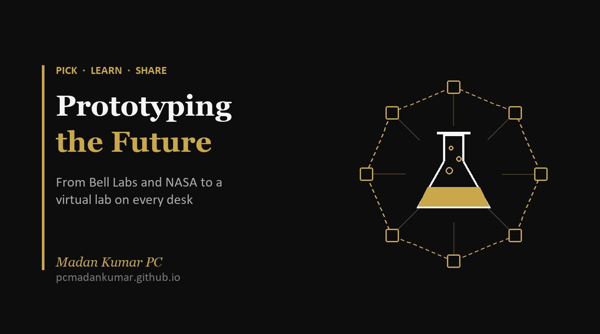

Prototyping the Future: Why AI Gives Every Researcher a Lab of Their Own

Bell Labs and NASA gave us the transistor and the phone camera. Google Research's Yossi Matias says AI is now giving every researcher a lab of their own. Here is why that matters for our students.
Earlier this week I wrote about where everyday technology really comes from [2]. The transistor in every chip started at Bell Labs. The sensor in your phone camera started at NASA. The internet started as a military research network. Ideas like these are born where failure is not allowed, and then, ten to thirty years later, they quietly turn up in our homes and pockets.
This morning I listened to a short conversation that picks up the same story and carries it forward. Futurist Sinead Bovell sat down with Yossi Matias, Head of Google Research, on her show I've Got Questions [1]. In her opening she describes Google Research as a place “where the future gets prototyped before all of us get to experience it” [1].
Prototyping the future. I have not been able to stop thinking about that phrase.
Labs that prototype the future
In a way, that is exactly what Bell Labs, NASA, CERN and Xerox PARC have always done. They build tomorrow's tools first, for a hard problem in front of them. The ones that work are later carried into ordinary products that millions of people use without a second thought. Nobody buying a mattress thinks about aircraft seats, and nobody taking a selfie thinks about a space camera.
What struck me in this conversation is how much shorter that journey has become. Matias gave two examples. Only a few years ago people were still asking whether self-driving cars would ever happen; now driverless Waymo taxis are an everyday sight around Google's Palo Alto campus. And he recalled his son, then at school, complaining that one line of a machine translation was poor. A few years earlier, machine translation of any quality had been science fiction [1].
The old spinoff took decades. The new one can take a few years, sometimes months.
Every researcher now has a lab of their own
This is the idea that struck a chord with me most. Matias believes each researcher will soon have something like a virtual lab: an AI partner that reads across every field, almost like a polymath. So the ordinary researcher starts to work the way a senior professor does today, leading a team of students and postdocs. The job shifts to asking the right questions, judging the results and deciding the next step [1].
Think about what that means. Bell Labs at its height had hundreds of scientists under one roof. Today one teacher, one counsellor or one student can have a small version of that team at their desk. That is exciting, but it also raises the bar. If I have a team of agents ready to work for me, the limit is no longer the work. The limit is the quality of my thinking and my questions. It pushes me to do better.
Matias also warned that universities and academic systems are not yet set up for this shift [1]. I would add that most schools are not either.
Ambient intelligence raises the goals
Matias calls the next stage ambient intelligence: technology that works so well we stop noticing it and simply use it [1]. Intelligence will be around us all the time and part of the daily routine, just as electricity and the internet are now.
The point I liked most is that this never tones down our goals. It does the opposite. Once the easier work is handled, we aim higher and work towards bigger goals. He remembered people asking whether children would become lazy because they could look up any fact on Google or Wikipedia. His view is that they became smarter, because the basics became a given and they could build on top of them. He expects us to stay just as busy, because we will keep raising the bar [1].
Bigger problems are now within reach
About ten years ago, on a visit to India, Matias saw a village that had flooded overnight. Knowing where a flood would strike the next day was simply not possible then. Today flood forecasts are good enough to act on. He described how Nigeria's government used Google's Flood Hub forecasts to send money to villagers before a flood arrived. Google's next step, Earth AI, aims to let people ask which communities and infrastructure a coming storm will hit and how to organise help [1].
The lesson for me: the bigger the problem, the better the technology that will come to meet it, and today's AI can already help. What it asks of us is an open mind. We have to think hard about which problems need solving, and in fact which are the right ones. When Sinead asked what keeps him up at night, that was his answer: not fear, but choosing well, in health care, crisis response, education and energy [1].
Vibe coding and crossing disciplines
Science has pushed people into narrower and narrower specialisms. Matias pointed to the mathematician Hilbert moving into physics late in his career, and to Einstein working with a colleague who handled the mathematics. AI can now play that partner role for anyone, helping us learn about other fields and understand them well enough to use them [1].
The same is happening with building. Through vibe coding, people with no coding background are writing code and small apps for their own needs, without waiting for a technology specialist [1]. I can vouch for this. Several of the tools I use every week at school are small apps I built this way, because I needed them and nobody else was going to build them for me.
Sinead had a neat name for the person this produces: a systems thinker, like an organisation of one. Building, questioning, checking the ethics and constantly learning, all in one person [1].
What this means for our students
In my earlier post I listed the labs students could aim to work in one day. This conversation adds something: the lab may now come to them. Four things I would like every student, teacher and parent to take away:
- Learn to ask good questions. It is the first skill Matias named. With a tireless AI team on hand, the question you ask decides the quality of what comes back.
- Go deep, then connect. Depth in one subject still matters a great deal [1]. The extra value now comes from linking it to other fields.
- Build something. A small app, a survey tool, a working model. The gap between an idea and a prototype has never been smaller.
- Choose problems that matter. Bigger problems are now within reach. Pick one you care about and start.
Many of the jobs we will hire for do not have a name yet. Sinead pointed out that “data scientist” was not a job title until 2008, after the internet's data boom, and Matias agreed that today's roles look quite different from what anyone expected [1]. Sinead even predicted an “AI-trician”, the person you call when the AI in your home stops working.
Bell Labs and NASA prototyped the future for the rest of us. With AI, our students can start prototyping a small piece of it themselves, from a school desk in Tamil Nadu as easily as from Palo Alto.
What would you build if you had your own virtual lab? I would love to hear on LinkedIn.
References
- Matias, Y., in conversation with Sinead Bovell (22 October 2026). Why AI is creating a new era of systems thinkers. I've Got Questions with Sinead Bovell. Spotify · YouTube. Examples and figures are as given in the episode.
- Madan Kumar PC (10 November 2026). From Rocket Labs to Your Pocket: Where Everyday Technology Really Comes From. https://pcmadankumar.github.io/blog/posts/from-rocket-labs-to-your-pocket.html
Numbers in square brackets point to the references above.